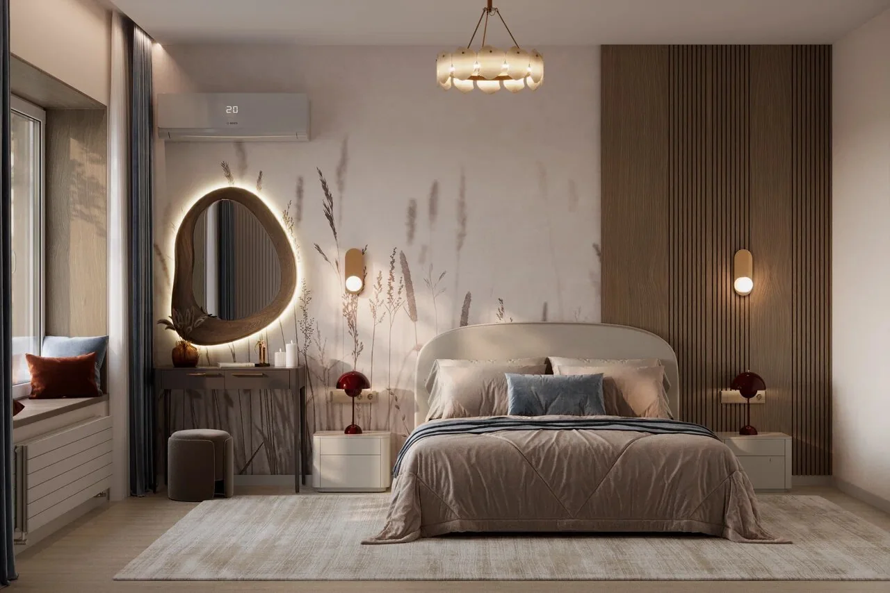

связаться
Начнём
с задачи
Позвоните или напишите в Telegram. Расскажите про объект — обсудим, что хотите получить в итоге.
контакты
Анна Царева
+7 (920) 753-99-97
позвонить →
Консультация в Telegram
написать →
Telegram-канал с проектами
смотреть →
Режим работыЕжедневно 09:00–18:00
Формат встречипо записи
офис в Туле
Красноармейский проспект, 7
Офис 401, 4 этаж
300041, Тула
От остановки «Улица Лейтейзена» около 200 метров пешком. В доме есть лифт и доступный вход; с питомцем можно — предупредите при записи.
Дневник дизайнера · Telegram
То, что остаётся
за кадром
Как принимаю работы, выбираю материалы и собираю интерьер вместе с заказчиками. В Telegram показываю проекты в процессе и рассказываю о решениях, из которых складывается дом.
Читать дневник в Telegram ↗Анна Царева@Anna_Tsareva ↗